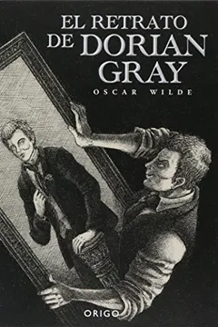
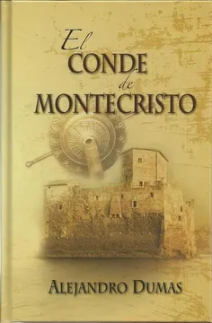

El Retrato de Dorian Gray

Es un excelente libro con peronajes complejos y bien desarollados. Te
envuelve en una historia que revela las pasiones humanas y los limites
de la moral y la vanidad.
Lo recomiendo para personas interesadas en el misterio y en las
cuestiones humanas.Personas que no desean leer novelas muy extensas
pero se quieren entretener con una buena historia.
Matar a un ruiseñor

Es una novela conmovedora en parte biográfica, ambientada en los años
30 en Estados Unidos. Esta novela quiere retrarar desde la perspectiva
infantil e inocente las injusticias sociales que se vivían en una
epoca plagada por el racismo y otras problematicas sociales.
La recomiendo para personas que quieren leer una novela pero aprender
tambien sobre un momento historico y las circunstacias que lo
rodeaban.
El Conde de Montecristo

Es una historia que contiene muchas emociones. Nos guia por un
recorrido en el cual sentimos y vivimos junto al peronaje principal el
amor, la traición, el odio y la venganza. Es una novela extensa pero
muy bien narrada, que mantiene al lector interesado en la proxima
eventualidad.
Lo recomiendo para personas interesadas en novelas extensas plagadas
de drama y pasiones.